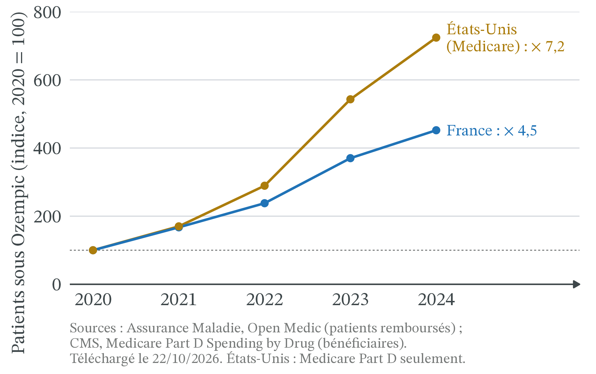
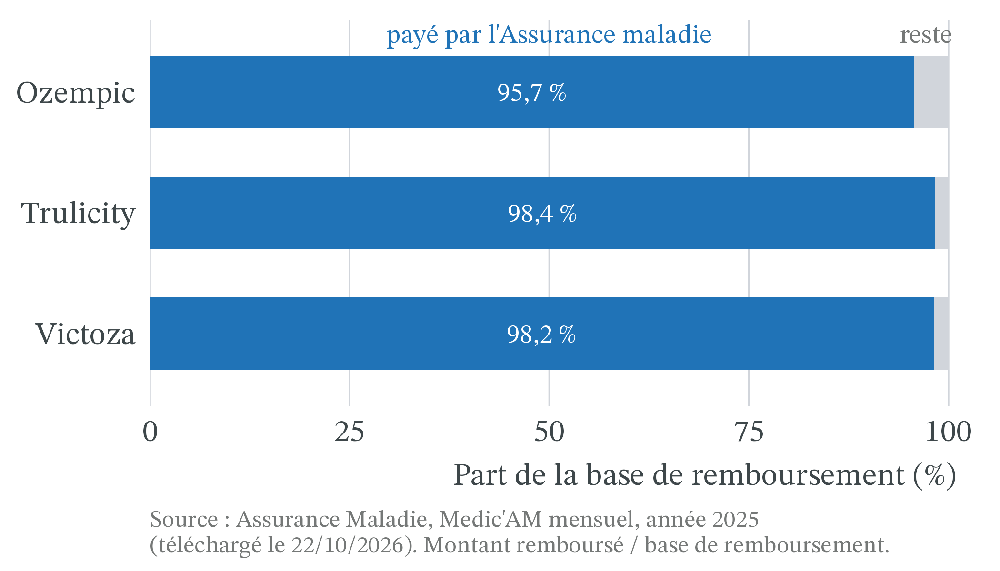
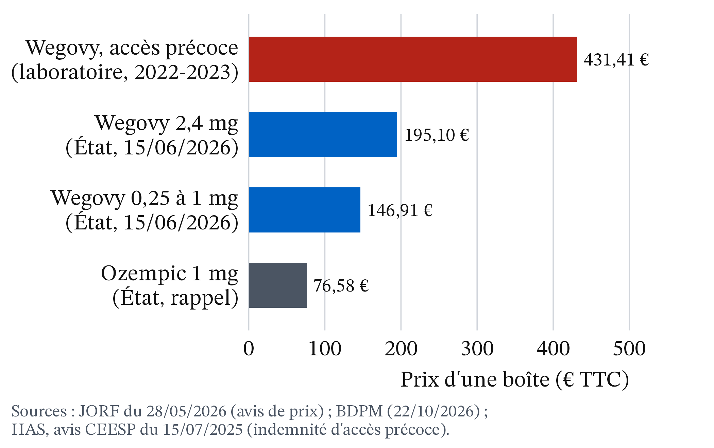

Pourquoi des diabétiques ont-ils manqué d’Ozempic (2023-2025) ?
CM 3 · Partie I · Marchés, prix et régulations
Choc de demande sous prix administré : pénurie et rationnement.
- Offre, demande, équilibre : la quantité offerte augmente avec le prix, la quantité demandée diminue ; au prix d’équilibre P*, elles sont égales (Q*).
- Déplacement d’une courbe : si le prix du bien change, on glisse le long des courbes ; si une autre cause change (revenus, goûts, technique), la courbe entière se déplace (D → D′).
- Élasticité-prix de la demande (e) : variation de Q en % divisée par la variation de P en %. Si |e| est inférieur à 1, la demande est peu élastique.
- Brevet : droit exclusif d’exploiter une invention pendant 20 ans à compter du dépôt de la demande ; son titulaire peut alors être seul vendeur (monopole).
- Asymétrie d’information : l’une des parties à un échange en sait plus que l’autre.
1 La question
En décembre 2023, l’Agence nationale de sécurité du médicament (ANSM) demande aux médecins de ne plus commencer de traitement par Ozempic, Victoza ou Trulicity, trois antidiabétiques de la même famille, les analogues du GLP-1. Le 14 mars 2024, elle réserve les nouveaux traitements aux diabétiques de type 2 qui ont déjà une maladie des artères avérée. Le 5 juin 2025 seulement, Ozempic et Victoza sont « de nouveau disponibles » : « les initiations de traitement peuvent reprendre pour tous les patients » (ANSM, mise à jour du 05/06/2025).
La cause officielle : « une augmentation importante de la demande mondiale » et « la difficulté pour les industriels concernés de pouvoir répondre à cet accroissement de la demande dans un temps restreint », sur fond d’usage de ces médicaments pour maigrir (ministère de la Santé, réponse à la question écrite n° 15498, JO du 21/05/2024).
Or le prix d’Ozempic ne se forme pas sur un marché : il est fixé par l’État. Aujourd’hui, une boîte d’Ozempic 1 mg coûte 76,58 € hors honoraire du pharmacien, et son taux de remboursement de base est de 30 % (Base de données publique des médicaments, consultée le 21/10/2026) ; en pratique, l’Assurance maladie paie l’essentiel du prix des boîtes remboursées (Figure 3). Trois faits intriguent.
- Sur un marché ordinaire, une demande qui explose fait monter le prix. Ici, le prix n’a pas servi à répartir le médicament.
- Ce sont des règles médicales qui ont décidé qui serait soigné.
- Même en payant plus cher, le monde n’aurait pas eu tout de suite plus de stylos : la France en aurait peut-être attiré davantage, au détriment d’autres pays.

La question de la séance : pourquoi des diabétiques ont-ils manqué d’Ozempic, et pourquoi le prix n’a-t-il pas réglé la pénurie ? Trois outils y répondent : le prix administré, le rationnement hors prix et la rigidité de l’offre. Les faits sont arrêtés au 22 octobre 2026 ; la pénurie est terminée, le raisonnement vaut pour toute pénurie à prix fixé.
2 Apports théoriques
2.1 Un prix fixé par l’État ne s’ajuste pas à la demande
Définition 1 (Prix administré) Un prix administré est fixé par une autorité publique, et non par la rencontre de l’offre et de la demande. Il ne change que par une nouvelle décision. En France, le prix d’un médicament remboursé est « négocié avec l’industriel », puis « fixé par le CEPS », le Comité économique des produits de santé, au vu notamment de son intérêt médical, du prix des médicaments comparables et des volumes de vente prévus (M. Coris et B. Bégaud, The Conversation, 02/06/2024).
Un prix administré n’est pas forcément trop bas. Tant que la demande est stable, il peut servir tous les patients. Le problème naît quand la demande change et que le prix, lui, reste fixe.
Définition 2 (Choc de demande) Un choc de demande modifie la quantité que les acheteurs veulent acheter à chaque prix : la courbe de demande se déplace (D → D′). Un choc positif la déplace vers la droite.
Pour Ozempic, le choc vient d’une demande mondiale en forte hausse, dans un contexte où des personnes non diabétiques le demandent pour maigrir (ministère de la Santé, réponse du 21/05/2024). Ce second usage est un mésusage pour l’ANSM : un usage hors des indications pour lesquelles le médicament est autorisé.
La hausse de la demande ne s’arrête pas aux frontières : de 2020 à 2024, le nombre de patients sous Ozempic est multiplié par 4,5 en France et par 7,2 parmi les bénéficiaires américains de Medicare Part D (Figure 2 ; Open Medic et CMS, téléchargés le 22/10/2026). Le même fabricant devait servir les deux marchés.
Définition 3 (Pénurie) Il y a pénurie quand, au prix en vigueur, la quantité demandée dépasse la quantité offerte. Elle se mesure par l’écart : quantité demandée − quantité offerte. Sur un marché libre, le prix monterait et l’écart se refermerait ; avec un prix administré, il demeure.
Définition 4 (Rationnement hors prix) Quand le prix ne départage pas les acheteurs, une autre règle décide qui sera servi : c’est le rationnement hors prix. Trois règles sont courantes :
- la file d’attente : premier arrivé, premier servi ;
- le critère : on sert d’abord ceux qui remplissent une condition, par exemple médicale ;
- le quota, ou contingentement : chaque vendeur ou acheteur reçoit une quantité limitée.
L’ANSM a combiné un critère (patients déjà traités, puis patients atteints d’une maladie des artères) et un quota : en octobre 2024, « une distribution fractionnée (contingentement quantitatif) est toujours en vigueur afin d’éviter de nouvelles ruptures » (ANSM, mise à jour du 03/10/2024).
Définition 5 (Offre rigide) L’offre est rigide quand la quantité offerte varie très peu avec le prix. À court terme, l’offre d’un médicament est rigide : produire plus exige des usines et des autorisations, qui prennent des mois ou des années. À long terme, elle devient plus élastique.
2.2 Les soins médicaux ne sont pas un marché comme les autres
 1996 · Linda A. Cicero / Stanford News Service, CC BY 3.0, Wikimedia Commons
1996 · Linda A. Cicero / Stanford News Service, CC BY 3.0, Wikimedia Commons
Kenneth J. Arrow (1963), « Uncertainty and the Welfare Economics of Medical Care », American Economic Review, 53(5), p. 941-973 · école néoclassique, économie de la santé. La maladie est imprévisible et le patient en sait beaucoup moins que son médecin : il ne choisit pas ses soins comme un bien ordinaire. Les soins reposent donc sur l’assurance, la confiance et des règles collectives plutôt que sur le seul prix.
On retrouve trois traits de l’analyse d’Arrow dans le cas Ozempic.
- C’est le médecin qui demande. Sans ordonnance, pas de médicament : la demande passe par un tiers mieux informé que le patient.
- Le patient ne paie pas tout le prix. L’Assurance maladie rembourse une partie, une complémentaire santé souvent une autre. Le patient réagit donc peu au prix public.
- La collectivité fixe des priorités. La Haute Autorité de santé (HAS) a jugé le service médical rendu par Ozempic « modéré » dans le diabète de type 2 traité en association, d’où un taux de remboursement de base de 30 % (Commission de la transparence, avis du 27/08/2025) ; sa réévaluation du 16/09/2026 le juge « important » en cas de maladie rénale chronique, sans changer le taux (Base de données publique des médicaments, consultée le 21/10/2026).

Les données de remboursement le montrent : en 2025, l’Assurance maladie a payé 95,7 % de la base de remboursement des boîtes d’Ozempic remboursées, 98,4 % pour Trulicity et 98,2 % pour Victoza (Figure 3 ; Medic’AM, téléchargé le 22/10/2026). Le patient et sa complémentaire n’en paient que quelques pour cent.
3 Les outils
3.1 Un choc de demande sous un prix fixé crée une pénurie
![Graphique offre-demande. La demande D est une droite décroissante bleue, l'offre O une droite croissante ambre très raide. Une seconde demande D prime, en tirets bleus, est décalée vers la droite, avec une flèche horizontale de D vers D prime. L'équilibre initial E se situe au prix P étoile, marqué prix fixé, et à la quantité Q étoile. Au prix P étoile, un trait rouge marqué pénurie va de l'offre jusqu'à la demande D prime. Plus haut, un point creux E prime, marqué prix libre, se trouve à l'intersection de l'offre et de D prime, au prix P étoile prime, bien plus élevé.](cm3_files/figure-html/fig-penurie-1.png)
- Le départ. Le prix fixé P* est le prix d’équilibre : tout patient muni d’une ordonnance est servi (point E).
- Le choc. La demande augmente à chaque prix : la courbe passe de D à D′.
- Le prix ne bouge pas. Au prix P*, les vendeurs offrent toujours Q*, mais les acheteurs demandent beaucoup plus : c’est la pénurie.
- Ce qui ne se produit pas. Sur un marché libre à nombreux vendeurs, les acheteurs prêts à payer plus feraient monter le prix jusqu’à E′. Ici, la pénurie dure tant que l’offre ne rattrape pas la demande, ou que la demande ne recule pas.
| Étape | Ce qui se passe | Effet sur le marché |
|---|---|---|
| 1. Choc | La demande mondiale augmente (usage pour maigrir) | D → D′ à chaque prix |
| 2. Prix fixé | L’État maintient le prix à P* | Le prix ne signale plus la rareté |
| 3. Offre rigide | Les capacités de production ne suivent pas à court terme | La quantité offerte reste proche de Q* |
| 4. Pénurie | Quantité demandée > quantité offerte à P* | Il faut rationner autrement que par le prix |
| 5. Règle médicale | L’ANSM réserve les nouveaux traitements à certains patients | Qui est servi dépend du dossier médical, pas du revenu |
Pénurie n’est pas rareté. Un bien est rare dès qu’on ne peut pas en avoir autant qu’on veut gratuitement : c’est le cas de tout médicament. Il y a pénurie seulement quand, au prix fixé, la demande dépasse l’offre, comme entre fin 2023 et juin 2025. Seule la pénurie oblige à rationner autrement que par le prix.
3.2 Quand l’offre est rigide, libérer le prix change surtout qui est servi
Exemple 1 (Un choc de demande sur un marché de médicament fictif) Sur un marché fictif à nombreux vendeurs, Q est en milliers de boîtes par mois et P en euros par boîte. Le prix fixé est de 75 €, un arrondi des 76,58 € réels.
| Prix P (€ par boîte) | 75 | 125 | 175 | 225 | 275 |
|---|---|---|---|---|---|
| Quantité demandée avant le choc (D) | 100 | 90 | 80 | 70 | 60 |
| Quantité demandée après le choc (D′) | 160 | 150 | 140 | 130 | 120 |
| Quantité offerte à court terme (O) | 100 | 105 | 110 | 115 | 120 |
- L’équilibre initial. À 75 €, on demande 100 et on offre 100 : P* = 75 € et Q* = 100.
- Une demande très peu élastique. De 75 € à 125 €, le prix monte de 50 ÷ 75 ≈ 66,7 % et la quantité demandée baisse de 10 %. e = −10 ÷ 66,7 ≈ −0,15.
- Le choc. À chaque prix, la demande augmente de 60 : D′ = D + 60.
- La pénurie. Le prix reste à 75 €. On demande 160, on offre 100 : il manque 60 milliers de boîtes, soit 60 ÷ 160 = 37,5 % des demandes.
- Si le prix était libre, à court terme. À 275 €, on demande 120 et on offre 120. Le prix augmente de 267 %, la quantité de 20 % seulement. Des 60 000 boîtes manquantes, 20 000 sont produites en plus ; pour les 40 000 autres, des patients renoncent, faute de payer 275 €. On suppose ici que le patient paie tout le prix (médicament non remboursé). S’il restait remboursé, l’Assurance maladie paierait l’essentiel de la hausse : la demande reculerait encore moins, et le prix devrait monter plus haut (déduction du modèle).
- La recette du vendeur. Au prix fixé : 100 000 boîtes × 75 € = 7,5 millions d’euros par mois. À prix libre : 120 000 × 275 € = 33 millions. La hausse paie surtout la pénurie, pas un effort de production.
Variante de long terme. Une fois de nouvelles usines construites, l’offre devient plus élastique : elle vaut toujours 100 à 75 €, mais 145 à 150 €, où elle rejoint D′. Un prix libre doublerait (+100 %) et la quantité augmenterait de 45 % : sur les 60 000 demandes non servies, 45 000 seraient servies et 15 000 abandonnées, faute de payer 150 € (même hypothèse). Mais à 75 €, même cette offre reste à 100. À prix fixé, seul le déplacement d’une courbe referme la pénurie : une offre qui augmente (O → O′) ou une demande qui recule.

Avec une offre rigide, libérer le prix fait apparaître peu de boîtes : il change surtout qui les reçoit, ceux qui peuvent payer (Figure 5). Or la pénurie française a pris fin alors que le prix restait administré : elle ne pouvait se refermer que par de nouvelles capacités, qui déplacent l’offre (O → O′), ou par un recul de la demande. Le ministère signale « des investissements importants » des laboratoires, notamment à Chartres et à Fegersheim (réponse du 21/05/2024).
3.3 La règle de rationnement décide qui subit la pénurie
Exemple 2 (Qui reçoit les 100 000 boîtes ?) On reprend la pénurie de l’Exemple 1 : au prix fixé, 100 000 boîtes pour 160 000 demandes, une boîte par patient. Les demandes se répartissent ainsi (chiffres fictifs) :
| Groupe | Demandes (milliers) |
|---|---|
| Diabétiques déjà traités (renouvellement) | 80 |
| Nouveaux diabétiques avec une maladie des artères | 20 |
| Autres nouveaux diabétiques | 30 |
| Demandes pour maigrir (hors indication) | 30 |
| Total | 160 |
- La file d’attente. Les patients arrivent au hasard ; chacun a 100 ÷ 160 = 62,5 % de chances d’être servi. Les diabétiques déjà traités reçoivent en moyenne 80 000 × 0,625 = 50 000 boîtes : 30 000 voient leur traitement interrompu. Les demandes pour maigrir obtiennent 30 000 × 0,625 ≈ 19 000 boîtes.
- Le critère de l’ANSM. On sert d’abord les patients déjà traités (80 000), puis les nouveaux diabétiques avec une maladie des artères (20 000) : 80 000 + 20 000 = 100 000. Les demandes hors indication n’obtiennent rien ; les 30 000 autres nouveaux diabétiques reçoivent un autre antidiabétique.
- Le prix libre. À 275 € (Exemple 1, étape 5), 120 000 boîtes vont à ceux qui acceptent ce prix ; rien ne garantit que ce soient les plus malades.
La même pénurie interrompt le traitement de 30 000 patients avec la file d’attente, d’aucun avec le critère médical. Le quota par pharmacie, lui, limite les livraisons sans dire qui sera servi au comptoir : il doit être combiné avec une autre règle.
« Le critère médical a supprimé la pénurie. » Non : il manque toujours 60 000 boîtes au prix fixé. La règle décide seulement qui subit la pénurie.
3.4 Application : la pénurie de 2023-2025
| Date | Décision ou fait | Source |
|---|---|---|
| Septembre 2022 | Premières recommandations de l’ANSM aux médecins, actualisées en mars et décembre 2023 | Réponse ministérielle, JO du 21/05/2024 |
| Décembre 2023 | Ne plus commencer de traitement par Ozempic, Victoza, Trulicity | ANSM |
| 14/03/2024 | Nouveaux traitements réservés aux diabétiques de type 2 avec maladie des artères avérée ; sinon, une autre classe d’antidiabétiques « à privilégier » | ANSM |
| Septembre-octobre 2024 | Reprise progressive des nouveaux traitements, sous contingentement | ANSM, 03/10/2024 |
| 01/02/2025 | Remboursement subordonné à un formulaire du médecin (âge, diabète de type 2, traitement seul ou associé), appliqué avec une tolérance jusqu’au 01/09/2025 | Vidal, 16/01/2025 et 03/06/2025 |
| 05/06/2025 | Ozempic et Victoza de nouveau disponibles pour tous ; Trulicity reste en distribution fractionnée | ANSM, 05/06/2025 |
La chronologie (tableau 2) suit les outils. Un choc de demande crée une pénurie au prix fixé. L’État rationne par critère et par quota, puis encadre la demande remboursée par le formulaire de février 2025. Appliqué avec une tolérance jusqu’au 1er septembre 2025 (Vidal, 03/06/2025), ce formulaire n’explique pas la fin de la pénurie. En juin 2025, l’ANSM constate « la fin des tensions d’approvisionnement », sans que le prix ait servi à les résorber. C’est compatible avec un déplacement de l’offre (O → O′), après les investissements de Chartres et de Fegersheim, mais les sources ne séparent pas l’effet de l’offre de celui de la demande.

De 2022 à 2023, les boîtes remboursées de la famille passent de 6,25 à 7,48 millions (+19,7 %) ; en 2024, elles ne progressent plus que de 0,1 % (Figure 6). En 2024, Ozempic progresse encore (+24,6 %), quand Trulicity (−7,7 %) et Victoza (−49,8 %) reculent (Medic’AM, téléchargé le 21/10/2026). La source ne dit pas pourquoi ; on sait que l’ANSM a laissé reprendre les nouveaux traitements par Ozempic en septembre 2024, quand Trulicity restait « en forte tension » (ANSM, 10/09/2024), ce qui est compatible avec la hausse d’Ozempic et le recul de Trulicity sans les prouver. Victoza a repris en même temps qu’Ozempic : sa chute a d’autres causes, que la source ne donne pas. Le total, lui, cesse presque de croître quand le rationnement s’applique (+0,1 % en 2024).

Mois par mois, le plateau se voit nettement (Figure 7) : d’octobre 2023 à septembre 2024, au cœur du rationnement, 7,46 millions de boîtes sont remboursées, à peine plus que les 7,18 millions des douze mois précédents (+3,8 %). D’octobre 2024 à septembre 2025, avec la reprise progressive des nouveaux traitements, on passe à 8,43 millions (+13,1 %), et la hausse continue après la fin des tensions (Medic’AM mensuel, téléchargé le 22/10/2026).
Les boîtes délivrées ne mesurent pas la demande. Pendant une pénurie, on observe la quantité vendue : la plus petite des deux, quantité demandée ou quantité offerte. Le plateau de 2024 est compatible avec une quantité bloquée par l’offre, sans le prouver : une baisse de la demande donnerait le même chiffre. Les boîtes non remboursées n’y figurent pas.

Pendant que les boîtes d’Ozempic remboursées sont multipliées par 4,9, leur prix moyen reste entre 77 et 81 € chaque année, et baisse même de 2,7 % de 2020 à 2024 (Figure 8 ; Medic’AM, téléchargé le 21/10/2026). Les points ne tracent ni une offre ni une demande : ce sont les couples quantité-prix observés chaque année. Ils montrent que le prix administré n’a pas répondu au choc de demande, comme le prix P* de la Figure 4.
3.5 Le modèle du prix plafond éclaire le mécanisme, pas la cause
La Figure 4 ressemble à celle d’un prix plafond : un prix maximum fixé par l’État ; il crée une pénurie quand il est fixé sous l’équilibre, sur un marché à nombreux vendeurs (CM 4). Le cas Ozempic s’en écarte sur quatre points.
- Un prix négocié, pas un plafond. Ozempic, médicament récent protégé par un brevet, n’a qu’un fabricant, Novo Nordisk (Base de données publique des médicaments). Son prix est négocié avec lui. Il n’est pas trop bas par décision : il l’est devenu quand la demande a bondi. Avec un seul vendeur, il n’y a pas de courbe d’offre au sens du modèle : E′ est le repère d’un marché à nombreux vendeurs. Un laboratoire libre de son prix le fixerait lui-même, probablement plus haut.
- Une offre mondiale et rigide. Le fabricant sert le monde entier avec des capacités limitées. Un prix français plus élevé aurait peut-être attiré des stylos, aux dépens d’autres pays : la pénurie se serait déplacée sans disparaître (déduction du modèle, non fait observé).
- Une demande qui passe par le médecin et l’assurance. Elle dépend des prescriptions et du remboursement plus que du prix public : le formulaire de 2025 agit sur elle sans toucher au prix.
- Le prix n’était pas la cause principale, selon l’État. Le ministère invoque un choc de demande mondiale face à des capacités limitées. Le député auteur de la question écrite, qui visait surtout le Trulicity, y voyait aussi un médicament « vendu en France à un prix d’achat très bas », donc très accessible (JO du 20/02/2024). Pour les médicaments en général, des prix plus élevés n’évitent pas toujours les pénuries : la rapporteure de la commission d’enquête du Sénat veut « démonter cet argument », en rappelant que la Suisse et l’Allemagne, qui pratiquent des prix supérieurs, connaissent aussi des pénuries importantes (Public Sénat, 06/07/2023).
Le modèle explique pourquoi une pénurie dure à prix fixe et pourquoi il faut alors rationner autrement. Il ne permet pas de conclure qu’un prix plus élevé aurait évité la pénurie d’Ozempic.
Refaire le raisonnement sur un nouveau choc de demande (2026).
Depuis le 15 juin 2026, Wegovy (même molécule qu’Ozempic) et Mounjaro (une molécule voisine) sont remboursés à 65 % aux adultes dont l’indice de masse corporelle (IMC) est d’au moins 40, ou d’au moins 35 avec une maladie associée, après échec d’une prise en charge nutritionnelle. La règle vient de deux arrêtés du 10/06/2026 (JO du 12/06/2026) : ils abrogent, avant leur entrée en vigueur, ceux publiés au JO du 28/05/2026, avec la même date d’effet. Mounjaro est aussi remboursé dans le diabète de type 2. Les faits utiles :
- Le prix. Avant cette date, les deux médicaments se vendaient déjà en pharmacie, depuis l’automne 2024, sans remboursement et sans prix fixé par l’État : le prix n’est négocié avec le CEPS que pour les médicaments remboursables (Code de la sécurité sociale, art. L. 162-16-4). Depuis le 15 juin, le prix d’une boîte est fixé : de 146,91 à 195,10 € pour Wegovy, de 176,10 à 433,80 € pour Mounjaro (avis relatifs aux prix, JO du 28/05/2026). En 2022-2023, pendant l’accès précoce, le laboratoire demandait 431,41 € par stylo de Wegovy (HAS, 15/07/2025) (Figure 9).
- La demande potentielle. La Haute Autorité de santé estime entre 1 et 2,1 millions le nombre de patients qui remplissent ces critères (avis du 18/12/2025) ; la ministre chargée de la Santé parle d’environ un million de personnes (Vidal, 28/05/2026). Environ 40 000 personnes ont eu une chirurgie de l’obésité en 2022 (HAS).
- Les quantités. En août 2026, l’Assurance maladie rembourse 20 416 boîtes de Wegovy et 70 996 de Mounjaro, contre 483 620 d’Ozempic (Medic’AM, téléchargé le 22/10/2026) (Figure 10).
- La règle d’accès. La première ordonnance remboursée est réservée à des médecins spécialisés de l’obésité exerçant en centre spécialisé de l’obésité (CSO), en CHU ou en structure de soins médicaux et de réadaptation (SMR) spécialisée, ou liés à un CSO ; le généraliste peut seulement renouveler (arrêtés du 10/06/2026).
- L’offre. Au 22/10/2026, l’ANSM ne signale ni rupture ni tension pour Wegovy et Mounjaro (Base de données publique des médicaments).


On applique les trois outils, dans l’ordre :
- Le choc. Le remboursement baisse le prix payé par le patient, pas le prix public : déplace-t-il la demande, exprimée en fonction du prix public, vers la droite ? Le zéro de janvier à mai de la Figure 10 mesure-t-il la demande d’avant ?
- L’offre. Peut-elle suivre, ou est-elle rigide ? Que faudrait-il observer pour le savoir ?
- Le rationnement. Si la quantité demandée dépasse la quantité offerte au prix fixé, quelle règle décide qui est servi ? La règle d’accès à la première ordonnance en est-elle une ?
4 Effets de répartition
4.1 Le critère médical protège les patients déjà traités
Par état de santé. Avec la règle de l’ANSM, les patients déjà traités gardent leur traitement. Les perdants sont les nouveaux patients sans maladie des artères, orientés vers une autre classe d’antidiabétiques (ANSM, 14/03/2024), et les demandes hors indication. Une file d’attente aurait interrompu des traitements en cours (Exemple 2).
Par revenu. Un rationnement par le prix sert d’abord ceux qui peuvent payer : à 275 € la boîte payés par le patient (Exemple 1), un patient modeste renonce avant un patient aisé, à besoin égal. Le prix administré et le critère médical rendent l’accès indépendant du revenu pour les patients qui y ont droit ; le reste à charge dépend toutefois de la complémentaire santé et des exonérations de chacun.
Par territoire. Le contingentement répartit les boîtes entre pharmacies : un patient peut trouver son traitement dans une officine et pas dans une autre. Aucune source ouverte pour cette séance ne chiffre ces écarts. Les investissements à Chartres et à Fegersheim (réponse ministérielle du 21/05/2024) augmentent l’offre et l’activité de ces territoires.
Par génération. Aucune source ouverte pour cette séance ne chiffre l’effet de la pénurie par âge. Par déduction, non chiffrée : le critère protège les patients déjà traités, installés depuis plus longtemps dans la maladie, au détriment des nouveaux.
4.2 Le prix fixé prive le vendeur de la rente de pénurie
Le fabricant vend toute sa production au prix fixé : il ne perd pas de ventes, mais ne profite pas de la pénurie. Dans l’Exemple 1, un prix libre aurait fait passer sa recette de 7,5 à 33 millions d’euros par mois, pour 20 % de boîtes en plus seulement. Ce gain dû au seul manque, la rente de pénurie, reste aux acheteurs : patients servis, Assurance maladie et complémentaires.
L’Assurance maladie rembourse un pourcentage du prix : un prix fixe contient sa dépense par boîte. En contrepartie, il faut organiser le rationnement, avec l’ANSM et les médecins.
5 La controverse
5.1 Faut-il payer les médicaments plus cher pour éviter les pénuries ?
On sépare l’analyse positive de l’analyse normative.
Analyse positive (ce qui est : mécanismes et effets, vérifiables).
- À court terme, avec une offre rigide, un prix plus élevé fait peu produire : il rationne surtout par la capacité à payer (Exemple 1).
- À long terme, le prix compte pour l’offre. Pour M. Coris et B. Bégaud, sur les médicaments anciens, dont le brevet a expiré, « la politique du prix toujours plus bas prévaut ». Elle pousse à produire dans des pays à bas coûts auprès de fournisseurs moins nombreux, ce qui « accentue la dépendance et le risque de pénuries » (The Conversation, 02/06/2024). L’article ne porte pas sur Ozempic, médicament récent.
- Le prix ne suffit pas. Les industriels imputent les pénuries à la faiblesse des prix français sur ces médicaments anciens ; la rapporteure du Sénat juge l’analyse trop courte (Suisse et Allemagne, plus haut). La commission, présidée par une sénatrice centriste avec une rapporteure communiste, appelle à un « pilotage public », tout en envisageant des hausses de prix « sous certaines conditions », ciblées sur les médicaments matures (Public Sénat, 06/07/2023).
- La responsabilité du fabricant est discutée. Pour Test-Achats, association de consommateurs belge, la pénurie est « principalement la faute » de Novo Nordisk, qui n’aurait pas anticipé la hausse de la demande liée à sa promotion de Wegovy (14/11/2023).
Analyse normative (ce qui devrait être : dépend de jugements de valeur).
- Qui servir d’abord ? Les plus malades, les premiers arrivés, ou ceux qui paient le plus ?
- Combien payer ? Un prix plus élevé coûte à l’Assurance maladie et aux patients, pour un effet incertain à court terme.
- Quelle liberté pour le médecin ? Faut-il encadrer la prescription au nom du bon usage, comme le formulaire de 2025, au risque de limiter la liberté de prescrire ?
Les écoles en présence. Les deux camps partent du même cadre néoclassique et divergent sur le poids des défaillances de marché en santé. Pour l’approche par le marché, le prix est un signal : un prix bas décourage l’investissement et prépare les pénuries de demain ; on aide ensuite les plus modestes par l’assurance ou des transferts. L’économie de la santé issue d’Arrow souligne ce qui distingue la santé d’un marché ordinaire : un patient moins informé que son médecin, une assurance qui paie. Elle en déduit que des priorités médicales fixées collectivement servent mieux les patients qu’un prix libre. Le débat porte moins sur le mécanisme de la Figure 4, admis par tous, que sur le poids donné à l’offre de demain et à l’accès de chacun aux soins aujourd’hui.
Selon Vidal (16/01/2025), le remboursement d’Ozempic, de Victoza et de Trulicity est « subordonné au renseignement par le prescripteur d’éléments relatifs aux circonstances et indications de la prescription », en application du Code de la sécurité sociale (art. L162-19-1). Depuis la loi de financement de la sécurité sociale pour 2024 (art. 73, qui modifie cet article), ce renseignement peut passer par un formulaire joint à l’ordonnance (décret n° 2024-968 du 30 octobre 2024, selon l’Ordre national des pharmaciens, 14/11/2024). Pour Ozempic, Victoza et Trulicity, la règle s’applique depuis le 1er février 2025, par des arrêtés publiés au JO du 15 janvier 2025 (Vidal, 16/01/2025). Le droit agit ici sur la demande remboursée, non sur le prix.
6 À retenir
- Un prix administré ne s’ajuste pas : si la demande se déplace vers la droite (D → D′), la pénurie, écart entre quantité demandée et quantité offerte, demeure.
- Quand le prix ne départage plus les acheteurs, il faut un rationnement hors prix : file d’attente, critère médical ou quota.
- La règle de rationnement décide qui subit la pénurie : le critère de l’ANSM a protégé les patients déjà traités, au détriment des nouveaux.
- Avec une offre rigide, libérer le prix ferait surtout monter le prix et changerait qui est servi ; à prix fixé, seul le déplacement d’une courbe referme la pénurie : une offre qui augmente (O → O′) ou une demande qui recule.
- Les soins médicaux ne sont pas un marché ordinaire (Arrow, 1963) : le médecin prescrit, l’assurance paie une partie, la collectivité fixe des priorités.
- Pour Ozempic, le modèle du prix plafond a des limites : prix négocié avec un seul fabricant, offre mondiale, et une pénurie que l’État attribue à un choc de demande.
7 Pour aller plus loin
Arte, Le Dessous des cartes · « Médicaments : une compétition mondiale » · 3 min 32 · mis en ligne le 02/06/2026
RTBF, #Investigation · « Pénurie d’Ozempic, un médicament contre le diabète » · 5 min 41 · 21/12/2022 (cas belge, début de la pénurie)
- Arte, Le Dessous des cartes, « Médicaments : un marché mondial », 12 min 31, mis en ligne le 10/10/2026. Lien
Articles
- The Conversation, M. Coris et B. Bégaud, « Médicaments : comprendre pourquoi pénuries et prix sont liés », 02/06/2024. Lien
- Public Sénat, L. Mollier-Sabet, « Pénuries de médicaments : la commission d’enquête du Sénat appelle à un “pilotage public” », 06/07/2023. Lien
- Vidal, D. Paitraud, « OZEMPIC, VICTOZA, TRULICITY : un nouveau dispositif de prescription à partir du 1er février 2025 », 16/01/2025. Lien
Autres sources citées
- Vidal, D. Paitraud, « Diabète : des dispositions transitoires concernant la délivrance des analogues du GLP-1 », 03/06/2025. Lien
- Vidal, « Mounjaro et Wegovy coûteront “une centaine de millions d’euros” aux finances publiques en année pleine » (titre abrégé), 28/05/2026. Lien
- Légifrance, arrêtés du 10 juin 2026 modifiant la liste des spécialités pharmaceutiques remboursables aux assurés sociaux et abrogeant les arrêtés du 23 mai 2026 (JO du 28/05/2026), JO n° 0136 du 12/06/2026, texte 47 (Wegovy) et texte 49 (Mounjaro), en vigueur le 15/06/2026. Wegovy · Mounjaro · Sommaire du JO
- Légifrance, avis relatifs aux prix de spécialités pharmaceutiques, JO n° 0123 du 28/05/2026, texte 101 (Wegovy) et texte 103 (Mounjaro) ; avis relatifs au taux de participation de l’assuré (décisions de l’UNCAM), textes 102 et 104. Prix de Wegovy · Prix de Mounjaro · Sommaire du JO
- Code de la sécurité sociale, article L. 162-16-4 (consulté le 22/10/2026). Lien
- HAS, avis n° 2025.0075/AC/SEM du collège sur les sous-populations à prendre en charge prioritairement (Wegovy et Mounjaro), 18/12/2025. Lien
- HAS, Wegovy, avis économique de la CEESP, 15/07/2025. Lien
- Base de données publique des médicaments, fichiers téléchargeables (prix et disponibilité, consultés le 22/10/2026). Lien
- Test-Achats, « La pénurie d’Ozempic est principalement la faute de son fabricant Novo Nordisk », 14/11/2023. Lien
- ANSM, « Analogues du GLP-1 et diabète de type 2 : reprise progressive des initiations de traitement pour Ozempic, Victoza et Trulicity », 10/09/2024, mis à jour le 21/04/2026. Lien
- ANSM, « Diabète de type 2 et tensions d’approvisionnement : conduite à tenir pour la prescription des analogues du GLP-1 », 23/09/2022, actualisation du 08/12/2023. Lien
- ANSM, comité scientifique temporaire « Analyse de l’usage des analogues du GLP-1 (aGLP-1) », compte rendu de la séance du 14/03/2024. Lien
- Assemblée nationale, question écrite n° 15498, « Pénurie critique d’antidiabétiques », JO du 20/02/2024, réponse au JO du 21/05/2024. Lien
- Base de données publique des médicaments, « OZEMPIC 1 mg, solution injectable en stylo prérempli », mise à jour le 29/09/2026 (avis de la HAS du 16/09/2026, consultée le 21/10/2026). Lien
- HAS, avis de la Commission de la transparence sur OZEMPIC 0,5 mg et 1 mg, 27/08/2025. Lien
- Ordre national des pharmaciens, « Renforcement de la pertinence des prescriptions médicales : publication du décret », 14/11/2024. Lien
- Assurance Maladie, « Medic’AM : médicaments remboursés par l’Assurance Maladie, par type de prescripteur (données interrégimes) », data.gouv.fr (fichiers 2020 à 2024 téléchargés le 21/10/2026). Lien
- Assurance Maladie, Medic’AM, fichiers mensuels de janvier 2022 à août 2026 (téléchargés le 22/10/2026). Lien
- Assurance Maladie, Open Medic, consommation de médicaments par substance, 2020-2024 (téléchargé le 22/10/2026). Lien
- CMS (Centers for Medicare & Medicaid Services), Medicare Part D Spending by Drug, édition 2024 (téléchargé le 22/10/2026). Lien
- K. J. Arrow, « Uncertainty and the Welfare Economics of Medical Care », American Economic Review, 53(5), p. 941-973, 1963. Lien